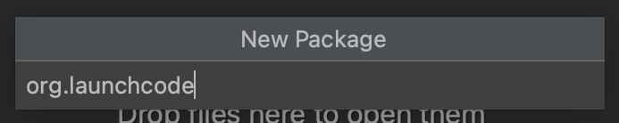
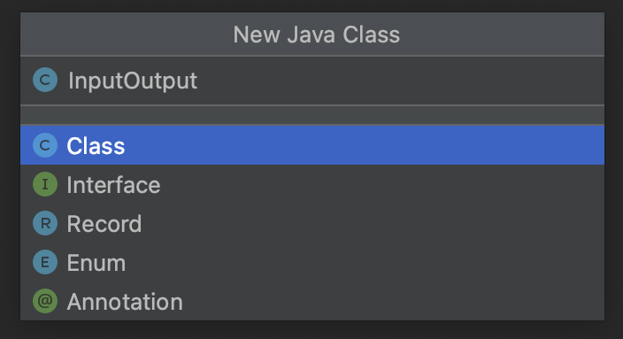

Exercises: Data Types
Getting Started
Work on these exercises in the IntelliJ java-web-dev-projects project. Create a new class for each numbered exercise. You may name the classes whatever you like, but use proper Java Naming Conventions
and make sure that the file name matches the class name.
Creating a Package and Classes
Here is how to create a new module to store these exercises, and how to create new classes within this package:
-
Click on the folder
java-web-dev-projectsin the Project pane. -
Open the package
datatypes-exercises. -
Within the
datatypes-exercisesdirectory create the following directory structure:src/main/java. -
Right-click (or control-click for some Mac users) on the
javafolder and select New and then select Package.NoteYou may have to right click on the
javadirectory and mark the directory as “Sources root” in order to create a new package.
-
Name the new package
org.launchcode.  -
Right click on the package and select New and then Java Class.
-
Name this what you will name your class (for example, in the 1st exercise below, you might name the class
InputOutputorHello).  -
Repeat steps 7 and 8 to create new classes.
You will be asked whether you want to add this file to Git. Press the “Yes” or “Add” button.
This is similar to git init and will allow you to stage your work later.
- You created the new class! You should see it in the file tree. You can proceed to write code within it. (Don’t forget to write the
mainmethod!)
The Exercises
A. Input/Output
Write a new “Hello, World” program to prompt the user for their name and greet them by name.
-
Follow steps 7 and 8 above to create a new
HelloWorld Classinside of yourorg.launchcodefolder. -
Add an
importstatement at the the top of the file to includeScanner:import java.util.Scanner; -
Declare a variable of type
Scannercalledinput:Scanner input = new Scanner(System.in); -
Add a question to ask the user:
System.out.println("Hello, what is your name:"); -
Create a variable to store the user’s response using the
Scanner’s.nextLine()methodString name = input.nextLine(); -
Use concatenation to print the greeting:
System.out.println("Hello " + name);
Right-click/Control-click the arrow next to your class and run the program.
B. Numeric Types
Write a program to calculate the area of a rectangle and print the answer to the console. You should prompt the user for the dimensions. (What data types should the dimensions be?)
-
Follow steps 7 and 8 above to create a new Class inside of your exercises.
-
Add an
importstatement at the top of your file to useScanner. -
Add a
Scannerobject to handle the user’s input. -
Add a print line to prompt the user for the length of the rectangle.
-
Define a variable to handle the user’s response. Now is the time to know what type the dimension will be.
TipYou’ll need to use a different Scanner method than what we used in Exercise 1 above.
-
Repeat the previous two steps to ask for and store the rectangle’s width.
-
Use the length and width values to calculate the rectangle’s area.
-
Print a statement using concatenation to communicate to the user what the area of their rectangle is.
-
Run the program to verify your code.
C. Numeric Types
Write a program that asks a user for the number of miles they have driven and the amount of gas they’ve consumed (in gallons), and print their miles-per-gallon.
D. Strings
The first sentence of Alice’s Adventures in Wonderland is below. Store this sentence in a string, and then prompt the user for a term to search for within this string. Print whether or not the search term was found. Make the search case-insensitive, so that searching for “alice”, for example, prints true.
Alice was beginning to get very tired of sitting by her sister on the bank, and of having nothing to do: once or twice she had peeped into the book her sister was reading, but it had no pictures or conversations in it, ‘and what is the use of a book,’ thought Alice ‘without pictures or conversation?’
You may want to write the string above on more than one line in your solution. Java 17 and IntelliJ give you a few options to do so. The easiest, thanks to your IDE, is to press Enter as you type the string. IntelliJ will close the string and concatenate it with the next line to create one longer string.
E. Strings
Extend the previous exercise. Assume the user enters a word that is in the sentence. Print out its index within the string and its length. Next, remove the word from the string and print the sentence again to confirm your code. Remember that strings are immutable, so you will need to reassign the old sentence variable or create a new one to store the updated phrase.